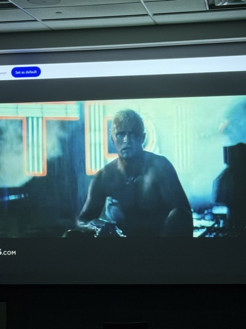
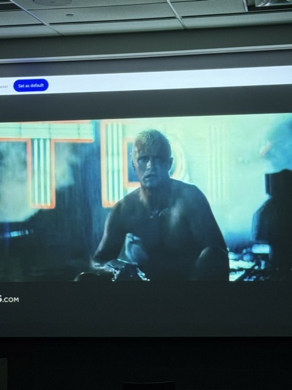
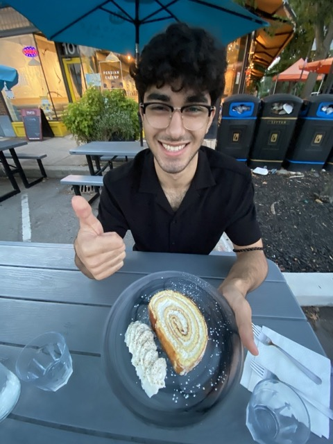

Highlights
- I'm working at CentML next term! Pretty excited to work alongside Gennady and Anand in Toronto. Excited to do more systems + compilers work
- I helped BM with bracket bots this term. From assembling one to writing some custom Linux Kernels to get 10$ Chinese boards to run Debian. We will be running a hackathon to develop with the bots next term — come 🤩 !!!
- I started working alongside Hong Zhang on a LLM memory optimization research project — more updates on this soon
- Got a lot better at recruiting + interviewing — Leetcode pays off
- I made a pretty awesome halloween costume — I spent all of reading week learning blender, 3D printing, and then spray painting to make MF Doom's iconic mask
- I started dancing (informally)
- I cooked a lot!
- This was the best term of school by far
Failures
- I did not do great academically this term. Not terrible, but not the best! I was in the thick of it going through CS 245, and PSCYH 101 is an elusively hard course. I should've stuck to Chinese
- Not a failure — but I am really going to miss being at school. I won't be back in Waterloo for a while, so I'm in a "you don't know you are in the good old days until you've actually left them" situation
2A has been defined by
- random adventures
- random hardships
- random blesses of life
and I am not complaining
I think what I loved about this term has been how serendipitous its been. I probably spent a total of 11-13 hours on-campus everyday and only 2 hours in my room, time getting to know great people I briefly met in first year, and maximizing shenanigans
Some events and photos!
Banff Trip
This was before the term had started, but this trip was pretty fun. With ML, YK, and SY — we got a campsite, rented a car, and went on cool nature adventures. The highlight was scaling Mt. Fairview (2000 m of elevation gain and reaching a max elevation of 3000 m). This was physically the hardest thing I've done. After getting to a checkpoint 80% of the way, our group was about to call it. But my delusional-ass had to be there...
But we did it! You can do anything, if and only if you want to do it (this is the theme of this blog).
We got to spend some time at the University of Calgary — where I got to meet TM and MF. Awesome time.
Beginning of Term + Recruiting
My living situation was not the best, and I didn't really get along with my roommates (they all seemed to already know eachother, something something echo chambers...). So I tried to spend as little time possible at my place and as much on campus.
I'd camp out in the STC lecture halls late at night to do leetcode, take mid-day naps at the MC comfy, and try to watch the sunset every day from E7.
I also went to class! Surprise, going to class is good! You see people, you are caught up, and, well, you get to use what you pay for.
Recruiting was also something that went great this term. After the terrible performance in 1B, I told myself I wanted to do better.
I got around 12 interviews from 50 cycle 1 applications — and offers from 6 of them. I was really excited to get matched with CentML (my first choice).
I really wanted to know that I could recruit, interview, write a good resume, and, well, be "employable".
I did that! Again, all this happened because I wanted it. I wasn't doing this to prove to anyone except me. If you were trying to recruit for a job that your parents wanted or that will impress your friends — you are essentially cutting your efforts short.
Competition is for losers. When you do something you don't want, you are setting yourself up to compete with people who do want it. And guess what? They’ll always have the edge over you. Because when the nights get late, the challenges mount, and the work gets tougher, they’ll push through — not out of obligation, but because they care.
Bracket Bots
BM is really smart. He's also really fun to work with. I also think robots are cool, but I've never worked with them before 😔
I got to work on custom firmware for chips, getting object detection working on Pi5 NPUs, and also stereo depth perception algorithms. A lot more work is to be done — so check out https://bracket.bot/ for more
Cooking
I had done a lot of meal prep + wine & steak nights with friends.
Friends
This term would not have been as amazing without all the awesome memories
- Watching the OG bladerunner late at night
- Sharing a lot of pomegranates with friends
- Staying up doing karaoke in lecture halls
- Running a birthday party
- An eventful potluck...
- A lot, lot, lot more...
 

I love sharing food with people. I made guacamole a couple of times, de seeded pomegranates, and more — but it is the people I share it with that make those moments truly special
Ok that's pretty corny... but hey man... idk what else to say...
Breakup
I had been in a relationship for almost 3 years. Around October, we decided to split up. I learnt a lot though it and also had lots of fun with her — but life moves on. It's not always promised you'll be with someone.
In life, it's a privilege to be around good people. If you have good parents, good friends, a good significant other, or even a good pet — be grateful for it.
Regardless, solitude is an amazing tool for personal growth
It's becoming easier and easier to be social, but exceptional people are built in solitude
Final Words
This term was the first time the drive back home wasn’t filled with pure excitement — it was bittersweet. So much has changed since I started college. I hardly recognize the person I was at the beginning of the year, and I have no idea what the next one will bring.
If you read my 1B review, it might’ve seemed like I was really unlucky, like everything that could go wrong did. But I recently came across the Nova Effect
It comes from an ancient Taoist story about a farmer who saved up small amounts of money and bought a beautiful white horse. The villagers admired the horse and told the farmer how lucky he was to own such a fine animal. The farmer simply replied, “Maybe.”
One day, the horse ran away. The villagers came to console him, saying how unfortunate it was. The farmer only said, “Maybe.”
A few weeks later, the horse returned, bringing with it a group of wild horses. The villagers were amazed and said, “How lucky you are!” But the farmer responded again, “Maybe.”
Soon after, the farmer’s son tried to tame one of the wild horses, but he fell and broke his leg. The villagers rushed over to share their sympathies, saying how terrible the accident was. The farmer, as always, replied, “Maybe.”
Not long after, soldiers came through the village, recruiting all the able-bodied young men for war. Because of his broken leg, the farmer’s son was spared. The villagers told the farmer how fortunate he was, but he just said, “Maybe.”
When I look back on this year, there were a lot of moments that felt like the white horse running away. Things I thought were setbacks, disappointments, or missed opportunities weighed on me. But sometimes, those same moments turned out to be the beginning of something better—new friendships, new projects, or new directions I hadn’t considered before.
This year hasn’t been a straight line, and maybe that’s okay. I’m learning to let go of trying to label everything as good or bad. Instead, I’m holding onto the idea that the story is still unfolding. Sometimes the best things happen because the white horse ran away.
Shoutout to YK, YH, RB, RL — CS is a pretty awesome program because of these people
Shoutout to PB, IM, AM — I went to an Iranian Student Association game night, and everyone was playing mafia in Farsi. My Farsi isn't very good, but they got me to practice and talk more — pretty awesome people (also the smartest guys I know)
Shoutout to ST, JS, EG, RF — super nails term because of these guys
Shoutout to ML — despite being halfway across the world, still my best friend 🤞
Shoutout to JM, NK — boys for life
Shoutout to TX — singing is fun
Shoutout to DK — what better way is there to spend time than with super smash bros, mario kart, gymming, steak, and wine
Shoutout to Andrew Nuri — the best barber in Waterloo
Shoutout to Morteza @ Kebab Shack — the best restaurant in Waterloo
And shoutout to Mom and Dad 😁
What's next other than my co-op? I'm going to be in Boston for a weekend in January. Bracketbot hackathon next term will be very fun in Waterloo. I am going to try dancing more (there's a certain club I'm really eager to join...). I am also going to plan some more events on campus (keep your eyes peeled for a certain contest next term...).
I don't have any expectations though. These are just a handful of things I want to do — but there's no guarantee. I will just walk my own path and face my errors.
While also being goofy guy...